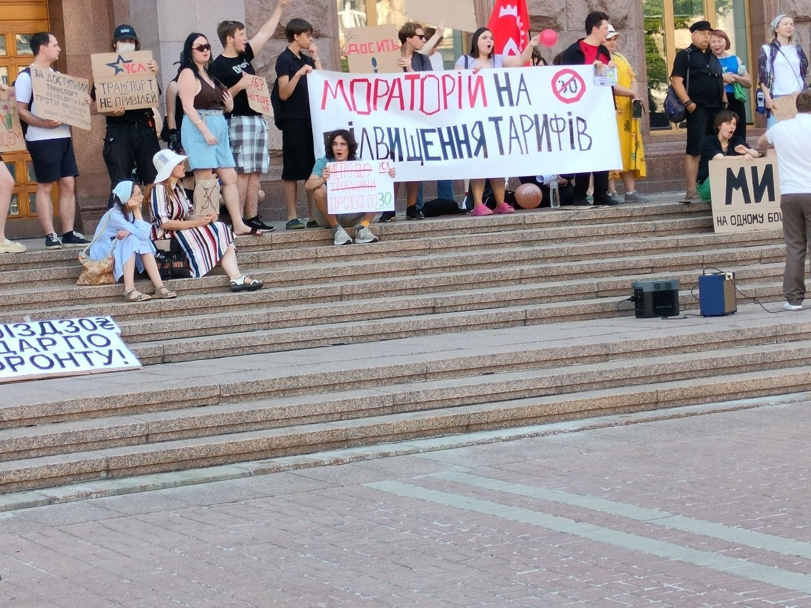

Шановні Друзі!
✊ Шановні друзі! Сьогодні під будівлею КМДА відбувся масовий протест проти підвищення тарифів на громадський транспорт. Вдалося зібрати близько 100-120 людей на піку акції, були присутні члени Української Соціалістичної Ліги, Соціального Руху, Прямої Дії, а також члени інших організацій, і, звісно, пересічні громадяни, що мали змогу виступити у форматі вільного мікрофону.
🔥 З гарних новин: вдалося встановити діалог із владою, в четвер о 15:00 відбудеться громадське слухання, де протестно налаштована громадськість зможе пояснити неадекватність та антисоціальність ціни в 30 грн на проїзд. До складу ініціативної групи, що комунікуватиме з владою, також доєднався активіст УСЛ Тайлер Щур, котрий представлятиме молодь, зокрема достудентського віку, яка стоїть перед нелегким вибором між еміграцією та тим, щоб залишитись у Києві. Ми вважаємо, що влада має підтримувати тих, хто наважився залишитись, а не добивати студентів тим, що навіть пільговий місячний проїзний коштуватиме більше, ніж 2000 грн, що становить середню академічну стипендію!
🤝 Тому, в четвер буде проведено ще один мітинг в підтримку ініціативної групи, що вестимете діалог із владою. Всі деталі будуть в організаційному чаті Народна Ініціатива (НІ!). Не дамо погасити народний гнів!